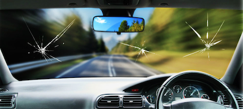

Mobile Windshield Replacement in Gardena and more.
Auto Glass Quote

Mobile Car Glass Replacement in Gardena and more.
We provide mobile auto glass replacement service. Call today

Auto Glass Replacement in Gardena Area We provide mobile auto glass repair in Gardena area and many cities nearby. Give us a call today and get a quick estimate and book your appointment for same day service. We cover the Following Cities. * Gardena * Compton * Hawhtorne * Carson * and more...
Auto Glass Quote
We provide mobile auto glass replacement service. Call today

Are you looking to have your windshield repair in Gardena area? We have been providing our mobile auto glass service in the area for more than a decade. Our car glass installers have all training and required experience to perform a quality car window repair service in Gardena and all nearby cities. We provide auto glass replacement service for the fowlling parts: * Windshield * Side Windows * Back Glass * Vent Glass * Quarter Glass * and more.. Give us a call today and get your estimate.
Windshield replacement in Gardena and all surrounding cities. Talk to our auto glass specialist and get an estimate. We have most parst in stock for most makes and models. We also provide same day service when we have the part available. We also offer lifetime warranty on labor all our windshield replacement services we do. We will fix any leaks due to an improper installation at no extra cost to you. Give us a cal today.
The Importance of Auto Glass Replacement Services Auto glass plays a crucial role in your vehicle’s safety. Whether you need a windshield replacement or a car glass repair, you want to partner with experts who will deliver quality services efficiently. That's why we offer mobile auto glass and windshield replacement services in Gardena California to ensure you get the best service on the go. We have been providing reliable auto glass replacement services for over a decade now. Our team of experts is well experienced in mobile auto glass in Gardena California. We are equipped with fully equipped mobile units that are designed to provide prompt services. Our mobile auto glass replacement services come with significant benefits. We understand that our clients need convenience, and that is why we offer mobile services. Our team will come to your location, repair or replace the auto glass, and vacuum all shattered glass. We work with all types of windshields, including safety laminated windshields which meet the required safety standards. The tempered glass window is one of the most commonly used auto glasses, and we handle them with expertise. We use premium quality glasses that meet OEM equivalents to ensure that your car's worth is maintained. Additionally, our premium quality Glasses ensure your car's aesthetic value is preserved. Our services include auto glass in Gardena California, auto glass replacement in Gardena California, mobile windshield replacement in Gardena California and car glass in Gardena California. Our experience in the field has enabled us to work with different car models and makes, providing certified and warranted auto glass replacement services. Safety is our top priority, and we ensure that we use safety standards in all our services. We are keen on details such as rain-sensing windshields and lane departure warning system windshields. We enhance our services to suit all types of weather conditions in Gardena California. You can trust us with your car, resulting in a safer and more relaxing drive. With our mobile car glass in Gardena California California expertise, we offer the following services: Windshield Repair and Replacement A cracked or chipped windshield can affect your vision while driving. When left unnoticed, it can escalate, resulting in a more extensive windshield repair or replacement. We offer prompt services to repair your windshield and ensure that it is in excellent condition. Side Windows Replacement Our team of experts can provide you with side window replacement services efficiently. We understand that accidents can happen at any time, and we offer 24/7 services to ensure you receive help even at odd hours of the day. Rear Window Replacement Whether it's a broken or shattered rear window, we offer reliable services that will have your car back on the road in no time. We have the expertise to handle rear windows with skill, and our services come with a one-year warranty. Conclusion Our auto glass replacement services and windshield replacement in Gardena California offer convenience and quality services. Our experts use OEM equivalents and premium quality glass that meet safety standards to provide top-notch services. Our mobile car glass in Gardena California California expertise allows us to offer 24/7 services. We ensure that shattered glasses are vacuumed while our mobile units provide efficient services at your location. Our services come with a one-year warranty, and we work on all types of car models and makes. Contact us today for reliable auto glass replacement services.
Give us a call — we're happy to answer any questions.
Call Now · (424) 240-8584